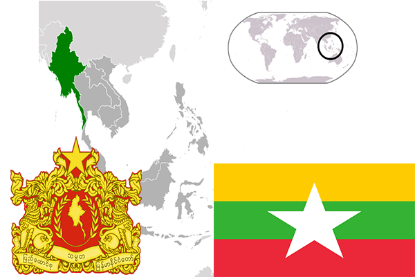

To`liq nomi: Birma Respublikasi
Region: G`arbiy Afrika
Qonunchilik shakli: Respublika
Mustaqillik kuni: 5-avgust 1960 yil (Fransiyadan)
Poytaxti: Uagadugu
Maydoni: 273 187 km² (dunyoda 74 -o`rinda )
Chegaradosh davlatlari: Mali, Niger, Benin, Togo, Gana
Aholisi: 17 692 391 (dunyoda 60 -o`rinda ) 2013 -yil roʻyxat
Aholi zichligi: 57,5 /km²
Aholining o`rtacha yoshi: 49,25 yil ( 50,8 ayollar, 47,7 erkaklar)
Rasmiy tili: Fransuz tili
Dini: 50% mahalliy dinlarga, 40% musulmonlar, 10% xristianlar
Pul birligi: Afrika Franki
Telefon prefiksi: +226
Internet domen: .bf
Xalqaro tashkilotlarga a`zoligi: BMT (1960 –yildan)
Dengiz va okeanlarga chiqishi: Yo`q
YIM: Butun: $ 17,8 mlrd, Jon boshiga: $ 1267 (2008 - yil roʻyxati)
Yirik shaharlari: Uagadugu, Bobo-Diulaso